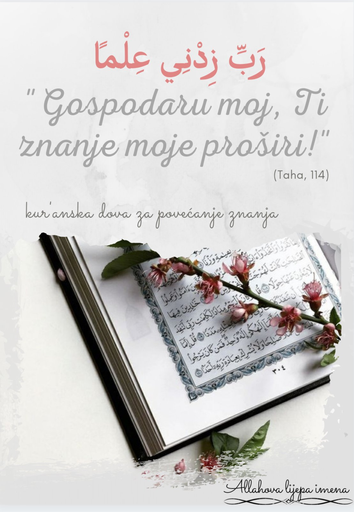

El-'Aziz

Zato što si Ti El-'Aziz,
svoju snagu tražim samo od
Tebe i samo (k)od Tebe je svo moje
dostojanstvo.
On je Allah – jedan!
Allah je Utočište svemu!
Nije
rodio i rođen nije,
i niko Mu ravan nije!
♡
On je Allah – jedan!
Allah je Utočište
svemu!
Nije rodio i rođen nije,
i niko Mu ravan nije!
♡
Zato što si Ti
Er-Rahmān i Er-Rahīm,
znam da ćeš
mi se smilovati
i da ćeš mi oprostiti.
❤
Zato što si Ti El-'Aziz,
svoju snagu tražim samo od
Tebe i samo (k)od Tebe je svo moje
dostojanstvo.
1. ALLAH
(اللّٰه)
Zato što si Ti Allah, moja je duša poletna.💓
💬Dugo sinoć nisam mogla zaspati. Razmišljala sam koji je to najljepši način da drugima predstavim ovo
vlastito ime. Jer ono to i jeste - najljepše vlastito ime ikada.
📌Allah je ime koje ukazuje na Biće koje se istinski obožava i ime koje upućuje na sva ostala Allahova
lijepa imena. Osnova imena je riječ el-ilah(bog, božanstvo).
📌Ime "Allah" stoji iznad svih drugih imena i nikada niko nije nazvan tim imenom osim Allah. ("Znaš li
da ime Njegovo ima iko?" Merjem, 65)
📌Sibevejh, arapski lingvista, uzvišeno ime "Allah" definirao je kao imenicu svih imenica.
📌 Ovo ime se najviše spominje u Kur'anu - više od 2200 puta.
📌 Najuzvišenija rečenica koja sadrži ovo ime je "la ilahe illallah"(nema boga osim Allaha; nema boga
koji je dostojan da se obožava osim Allah).
Dio sahih-hadisa glasi:"Kada bi se sedam nebesa i sedam
zemalja i sva stvorenja na njima stavila na jedan tas vage, a riječi 'la ilahe illallah' na drugi, riječi
'la ilahe illallah' bi prevagnule." To su riječi uspjeha na oba svijeta.
(Zadatak za tebe i za nas:
pokušajmo ih što češće svjesno izgovarati. Podsjetnik: za izgovor ovih najvažnijih riječi nije potrebno
pomjeranje nijednog drugog dijela govornog aparata osim jezika, tako da je potpuno neprimjetno i moguće u
svim prilikama. Koliko sve te prilike iskorištavamo?)
📌Allahovo najveće ime?
Rekao je Poslanik, as: "Nijedan musliman nikada neće doviti njime, a da mu
se Allah neće odazvati."(Ahmed, Tirmizi...) Veliki je broj mišljenja koje je to ime. Neki kažu da je upravo
"Allah" najveće od svih imena. Neki kažu da to nije samo jedno određeno ime. Neki kažu da je to svako ime
kojim rob iz sveg srca, onda kada je u potpunosti predan Allahu i srcem i mislima, zamoli Njega Uzvišenog za
nešto.
💬Na kraju sam shvatila da je nemoguće i, za naš mozak skromnog kapaciteta, nedokučivo značenje imena
Allah. Ne možemo ga pojmiti, koliko god se trudili. Specifično je i toliko savršeno. Zbog toga na nas i
ostavlja utisak veličine i zapanjenosti, divljenja i težnje. Ne možemo ga razumom objasniti, ali je naša
duša sposobna da osjeti svu tu ljepotu. Stvari duše se zato ni ne trebaju objašnjavati, jer za tim nema
potrebe. Naš ruh je dio kojeg je Uzvišeni Gospodar u nas udahnuo. Zato i težnja ka Njemu, ka savršenosti.
Ostaje nam da čežnjivo čekamo naš ponovni sastanak trudeći se da Onaj koji je savršen bude zadovoljan nama
nesavršenima.
"Takav vam je Allah, moj Gospodar, na Njega se oslanjam i Njemu se obraćam."(Sura Šura, 10)
💭Pitanja za razmišljanje:
1. Šta riječ "Allah" predstavlja u mom životu?
2. U kojim i kakvim
sve prilikama je koristim?
3. Koje me emocije prožimaju kada izgovorim riječ "Allah"?
4. Koliko
često nisam svjestan/na da je izgovorim, tj. koliko je često izgovorim automatski, bez razmišljanja o njoj?
5. Da li se često zaklinjem Bogom?
6. ...
Postavljaj sam/a sebi i druga pitanja i ne zaboravi da zapisuješ svoja promišljanja.💓
Mnogo praktikujmo preporuku iz ajeta:
"... a (Allah) k Sebi upućuje onoga koji Mu se pokajnički obraća, one koji vjeruju i čija se srca kada
se Allah spomene smiruju, a srca se doista, kada se Allah spomene, smiruju."(Sura R'ad, 27-28), kao i
preporuku iz hadisa:
"Dvije riječi omiljene Allahu, lahke na jeziku, a teške na vagi, to su:
Subhanallahi ve bi hamdihi, subhanallahil-azim.” (Buhari)
🌺"... i Allaha mnogo spominjite da biste postigli što želite."(Sura Džuma, 10)
Nadam se da ste uživali razmišljajući o Allahovom Imenu i da vam se olovka
barem malčice
istrošila.
💭Zašto potenciramo zapisivanje?
Zato što se Milostivi zaklinje perom u suri koja nosi
identičan naziv.
Zato što u Knjizi stoji:"...Gospodar tvoj je Plemenit, Onaj koji je
(čovjeka)
podučio peru..."(Sura 'Aleq, 3-4)
Podučio nas je, pa iskažimo Mu zahvalnost
koristeći tu sposobnost.
A i biće divno nekad kasnije vraćati se na zapisane tragove naših
misli.💕
2. Er-Rahmān (الرَّحْمٰنُ)
3. Er-Rahīm (ُالرَّحِيم)
💬 Sjedne insan često sam sa sobom da raščisti neke stvari. Vraćaš film unazad, a ono, ima šta i da
vidiš: problemi, grijesi, obuzme te briga i tuga; a onda, zastaneš i sjetiš se.
On je, Er-Rahmān -
Svemilosni i Er-Rahīm - Samilosni.❤
📌Jezičko značenje riječi rahmet je 'milost, nježnost,
naklonjenost, rodbinska veza ili maternica'.
Oba imena su izvedena iz riječi rahmet, samo
uveličano.
Ime Er-Rahmān je većeg stepena, sveobuhvatnije od Er-Rahīm.
📌 Er-Rahmān
(Milostivi) i Er-Rahīm (Samilosni) su Allahova uzvišena imena koja se često spominju u časnom
Kur’anu.
📌 Ova dva Allahova lijepa imena su od posebnog značaja i važnosti. To su imena kojima je
Uzvišeni Allah u Svojoj plemenitoj Knjizi otpočeo suru El-Fatiha i sve ostale sure u kojima je objavio uputu
i jasne dokaze.
📌 Na mnogim mjestima u Kur’anu ova dva Allahova imena navedena su skupa i
oba ukazuju na Allahovu dž.š., osobinu milosti. S tim što, kada dođu skupa, onda ukazuju na postojanje
rahmeta kao Allahovog svojstva i djela. Tako je Er-Rahmān - Onaj kojem je rahmet osobina, a Er-Rahīm - Onaj
koji je Milostiv prema Svojim robovima. Dokaz tome su riječi Uzvišenog: ,,On vas blagosilja, a i meleki
Njegovi, da bi vas iz tmina na svjetlo izveo, On je prema vjernicima milostiv” (El-Ahzab, 43
ajet);
“On je prema njima blag i milostiv” (Et-Tevbe, 117 ajet).
📌 Jedna kur'anska sura
nosi naziv "Er-Rahmān"
📌 Ime Er-Rahmān se u Kur'anu spominje 57 puta, a Er-Rahīm 115
puta.
📌 Uzvišeni Allah u Kur'anu kaže: ,,Milostivi poučava Kur’anu” (Er-Rahmān, 1-2
ajet)
📌 „Onima koji su milostivi smilovat će se Allah svemilosni.“ (Hadis)
📌 Uzvišeni
Allah u hadisu kudsijji je rekao: „Budite milostivi prema onima koji su na Zemlji, pa će se vama smilovati
Onaj koji je na nebu.“
💬 Ima nešto u tom imenu Er-Rahmān što ti srce smiri i da ti
nadu.
Jednostavno, shvatiš da si ti samo insan i da je nemoguće da ne pogriješiš u svome životu,
shvatiš da je to u redu dokle god se kaješ i nastojiš popraviti ono što se desilo. Ponekad budeš ljut na
sebe do te mjere da misliš kako je sve u tvome životu propalo, da nema više nade, a zaboraviš na Gospodara
koji je Er-Rāhman i Er-Rahīm.
Zaboraviš na Gospodara Koji je prema tebi milostiviji od tvoje majke
i Koji tvoj život može promijeniti dok trepneš okom.
On iz svoje milosti prema tebi kaže: ,,Budi, i
ono bude." Dovoljna je jedna iskrena sedžda, dova, uzdah ili suza da Er-Rahmān tvoj život promijeni u
potpunosti.
Često samu sebe podsjetim na jedan divan kur'anski ajet, u kome Allah dž.š., kaže:
,,Gospodar vaš je sam Sebi propisao da bude milostiv.” (El-En‘am, 54 ajet) . Zastaneš, razmišljaš. Imaš
Gospodara koji je sam Sebi propisao da bude milostiv, pa šta je onda s nama ljudima? Zašto mi nemamo
milosti jedni prema drugima, a Allah je sam Sebi propisao da bude milostiv?
Sve što imaš od ovog
dunjaluka, a većinu toga nisi ni tražio ni zaslužio, dobio si jer te On voli. Ti si Njegovo stvorenje kojem
On voli da prašta, ma koliko grijeha imao. Zapamti, Njegova vrata milosti i oprosta su uvijek širom
otvorena.❤
💭Pitanja za razmišljanje:
1. Šta riječi "Er-Rahmān" i "Er-Rahīm" predstavljaju
u tvome životu?
2. U kojim i kakvim ih sve prilikama koristiš?
3. Koje te emocije
prožimaju kada izgovoriš ove dvije riječi?
4. Prema kome u životu trebaš biti više
milostiv?
5. Kako da iskažeš svoju milost prema majci u čijoj si milosti(maternici) bio/la 9
mjeseci?
6. Kako svoju milost možeš povećati prema ljudima?
7. Kako svoju milost možeš
povećati prema životinjama?
📌 Na kraju, podsjećam nas na dva divna kur'anska ajeta u kojima Allah
dž.š., kaže:
,,Onaj ko kakvo zlo učini ili se prema sebi ogriješi pa poslije zamoli Allaha da mu
oprosti – naći će da Allah prašta i da je milostiv." (En-Nisa, 110. ajet)
„A milost Moja obuhvaća
sve, daću je onima koji se budu grijeha klonili i zekat davali i onima koji u dokaze Naše budu vjerovali."
(Al-A'raf, 156 ajet)
Nadam se da ste izdvojili barem nekoliko minuta svoga vremena kako biste dublje razmislili o značenju
ova dva Allahova imena i šta ona predstavljaju u vašem životu.
Elhamdulillah, za sada smo memorisali tri Allahova imena, a ona su: Allah, Er-Rahmān i
Er-Rahīm.
U razgovoru s mnogim ljudima, primjetila sam koliko prošlost, konkretni događaji iz prošlosti, utiču na
njih, kako gube nadu i ne dopuštaju sebi da nastave dalje.
Istina je, insan treba voditi računa o sebi, preispitivati se svakodnevno.
U hadisima nalazimo
da je Poslanik, s.a.v s., tražio oprosta i do 70 puta dnevno.
Ako upućuješ dovu Allahu za oprost, vjerujući da je on doista Er-Rahmān i Er-Rahīm, On će ti oprostiti i
dati novu priliku za život, a ako ti je On usadio želju za pokajanjem, zar misliš da je to
slučajno?
Htjela sam skrenuti pažnju na još jednu stvar. Jedno od pitanja koje sam postavila prije svega sebi, a
onda i Vama, a ono je glasilo: ,,Ako je Allah propisao Sebi da bude milostiv, šta je s nama ljudima? Zašto
nemamo milosti jedni prema drugima?"
Zar biste voljeli vidjeti svoga brata/sestru kako pati na Sudnjem danu samo radi toga što Vi niste
smogli snage da halalite?
Zar nismo svjesni da imamo dovoljno grijeha za koje trebamo odgovarati,
pa zar da nemamo milosti jedni prema drugima i ne smognemo snage da halalimo kako bismo jedni drugima
olakšali barem malo ahiretske muke?
Uostalom, zar ne znate da to što ćete Vi oprostiti nekome ide Vama u korist?
,,Ko muslimanu oprosti njegovu pogrešku, Allah će mu na Kijametskom danu oprostiti njegovu.” (Ebu
Davud)
Želim s vama podijeliti divan tekst koji opisuje suštinu oprosta.
"Šta znači oprostiti nekome?
Oprostiti ne znači izgovoriti riječi "opraštam ti" ili prihvatiti nečije "izvini". To su samo riječi.
Samo forma koja se nije dotakla suštine.
Oprostiti znači nastaviti dalje.
Nastaviti sa svojim životom. Ne biti zarobljenik te osobe i
njenih postupaka.
To je pravo opraštanje."
4. El-
Melik (المَلِكُ)
Zato što si ti El- Melik, ja se prepuštam Tvojoj vlasti i moja duša je ponizna pred Tobom.
💗
💬 Razmišljam. Kada bi samo insan istinski shvatio ovo uzvišeno Allahovo ime, u njegovoj duši ne
bi bilo straha ni od čega osim od Njega. Brige bi ga napustile, a duša bi mu bila slobodna i spokojna,
pokoravajući se volji Vladara svih vladara.
📌 Uzvišeno Allahovo ime El- Melik, El- Mālik, El-
Melīk- Vladar.
📌 Jezičko značenje Melik, Melīk i Malik: onaj koji posjeduje vlast.
📌
Poznavaoci dubljeg značenja kažu da El- Melik znači potpuni vladar svih vrsta posjeda, dok je El- Malik
vlasnik posebne vlasti. El- Melik je, dakle, sveobuhvatnije od El- Malik.
📌 Ibn Džerir,
rahimehullah, je rekao: “El- Melik (Vladar) jeste Onaj iznad kojeg, kao vladara, nema i ne postoji ništa.
Sve je to ispod Njega.”
📌 Istinska vlast pripada Allahu Jedinom i niko ne učestvuje s Njim u
vlasti. Svaki onaj koji nešto posjeduje, posjeduje to uz Allahovo posjedovanje i toga i njega
samog.
📌 Allahovo ime El- Melik se u Kur’anu spominje 5 puta. Neka je Uzvišen Allah, Vladar
istiniti!” (Taha, 114)
“On je Allah- nema drugog boga osim Njega- Vladar Istiniti.” (El- Hašr, 23)
Vladara ljudi.” (En- Nas, 2)
📌 Allahovo ime El- Malik se spominje 2 puta u Kur’anu. "Vladara Dana
sudnjeg.” (El- Fatiha, 3) “Reci: “O Allahu, Ti koji svu vlast imaš...” (Ali Imran, 26)
📌 Allahovo
ime El- Melīk se spominje samo jednom u Kur’anu, u 55. ajetu sure El- Qamer.
📌 Čovjek je posjednik
(malik) nečega, ali Istinski Vlasnik (El- Malik) je samo Allah Uzvišeni.
📌 Učenjaci kažu da 26.
ajet sure Ali Imran obuhvata sva Allahova lijepa imena i savršena značenja. Poslanik s.a.v.s. nikada nije
proučio taj ajet a da nije zaplakao. Neki učenjaci smatraju da je Allahovo najveće ime “Malikul- mulk”
(sadržano u spomenutom ajetu).
📌 Allah Uzvišeni ima apsolutnu vlast (El- Melik) i On njome
savršeno vlada (El- Malik).
📌 Zabranjeno je da čovjek nosi ime “Malikul- mulk” ili da sebe naziva
apsolutnim vladarom.
📌 Apsolutna vlast i pokornost pripadaju samo Allahu, Istinskom Vladaru. Svi
ostali vladari su u Njegovoj vlasti, Njegovi robovi.
💬 Divno li je znati da je naš Jedini i
Istinski Vladar samo Allah. Divno li je znati da On upravlja sa svim, i da nam niko ne može pribaviti neku
korist ili nanijeti štetu bez Njegove dozvole. Divno li je znati da su naš život i naša smrt, naše zdravlje,
naša porodica, naš imetak, naše znanje i sve ostalo što imamo, a i mi sami u Njegovoj vlasti. Koliko nas ta
spoznaja rasterećuje od dunjalučkih briga, i oslobađa od straha i strepnje pred robovima
Njegovim.
"Reci: "O Allahu, koji svu vlast imaš, Ti vlast onome kome hoćeš daješ, a oduzimaš je od
onoga od koga hoćeš; Ti onoga koga hoćeš uzvisuješ, a onoga koga hoćeš unizuješ; u Tvojoj ruci je svako
dobro - Ti, uistinu, sve možeš!" (Ali Imran,26.)
Sve, apsolutno sve što se dešava i što nas
okružuje je u vlasti Vladara. Vjerovanje u ovo uzvišeno Allahovo ime čini da se čovjekovo srce smiruje pred
svim vrstama iskušenja. Također, spoznaja da je Allah Jedini Istinski Vladar, ne dozvoljava čovjeku da se
ponese ili nepravedno postupa ma koliku ovozemaljsku vlast imao. Ona (ova spoznaja) budi svijest u čovjeku
da on nije apsolutni vladar niti vlasnik bilo čega i da će za svoju odgovornost i svoja djela odgovarati
pred apsolutnim Vladarem.
Svako onaj ko se nepravedno ponese onim što mu je dato, prije ili kasnije
će spoznati da zapravo nema nikakvu moć niti vlast. Takav slučaj je bio sa Faraonom, pa je na koncu shvatio
da je jedini gospodar i vladar samo Allah.
💭 Pitanja za razmišljanje:
1. Šta u tvome
životu predstavljaju riječi “El- Malik” i “El- Melik”?
2. Razmišljaš li dok učiš suru El- Fatihu na
svakom rekatu svojih namaza o ovom uzvišenom Allahovom imenu?
3. Da li si ikada pomislio/ la da si
ti vlasnik/ vlasnica nečega?
4. Koliko često spominješ ovo uzvišeno Allahovo ime?
5. Da li
se bojiš Allahovih stvorenja zbog vlasti koja im je data više nego Vladara svega?
6. Da li se
pokoravaš Allahovim stvorenjima u onome što je nepokornost prema Allahu?
7. Da li si milostiv/ a i
pravedan/ na prema onima koji su u tvojoj privremenoj “vlasti”?
8. Da li vjeruješ da je sve u
apsolutoj vlasti Vladara svih vladara?
9. Da li imaš svijest od odgovornosti pred Vladarem za
funkciju/ poziciju koja ti je povjerena na ovom svijetu?
10. Da li si “vlasnik” svojih strasti i
svoga nefsa ili oni vladaju tobom?
📌 Za kraj jedan divan ajet koji nas podsjeća na neizmjernu Allahovu milost, iako je On apsolutni
vladar:
“Toga Dana će istinska vlast biti samo u Milostivoga.” (El- Furkan, 26)
Ujedno, ovaj ajet nas također podsjeća da ličnost ovozemaljskog vladara nije potpuna bez dobročinstva,
milosti i samilosti. Veličina je imati vlast i moć a pokazati samilost i opr
Nadam se da ste proveli u
razmišljanju o uzvišenom Allahovom imenu El- Melik i da ste pokušali barem malo podići svijest o
apsolutnosti Njegove vlasti.
Vjerujem da ste postali opušteniji i da ste razmišljali o tome kako je sve ono što imate zapravo
Njegovo. Taj osjećaj spušta čovjekov ego i uči ga istinskoj poniznosti pred Njim i zahvalnosti
Njemu.
Isto tako, sa spoznajom Njegovog uzvišenog imena El- Melik, duša postaje rahatnija a misli opuštenije.
Sve naše brige, problemi i tjeskobe imaju Najboljeg Vladara.
A zar ima straha i brige za onoga koji
se prepustio Njegovoj vladavini?
🔴Podsjetnik:
Ako niste do sada, pokušajte zapamtiti 26. i 27. ajet sure Ali Imran. Ajeti koji
odagnaju brigu, donose smiraj i pozivaju našu dušu da se prepusti vlasti Njegovoj.
🔴Također, želim spomenuti i zikr koji bi trebao biti naša svakodnevnica a u kojem se spominje riječ
mulk. Rekao je Allahov Poslanik , sallallahu alejhi ve sellem: “Tko kaže:
لا إِلَهَ إِلاّ اللَّهُ
وَحْدَهُ لا شَرِيكَ لَهُ لَهُ الْمُلْكُ وَلَهُ الْحَمْدُ وَهُوَ عَلَى كُلِّ شَيْءٍ قَدِير
“LA ILAHE
ILLALLAHU VAHDEHU LA ŠERIKE LEHU, LEHUL-MULKU VE LEHUL HAMDU VE HUVE ALA KULLI ŠEJ’IN KADIR”
(Nema
boga sem Allaha, On nema sudruga, Njemu pripada sva vlast, Njemu pripada sva hvala i On je svemoćan),
svakoga dana po sto puta, vrijedi mu kao da je oslobodio deset robova, biće mu upisano sto dobrih djela,
izbrisano sto grijeha, i biće mu to štit od šejtana toga dana sve do noći i niko nije ništa bolje uradio,
osim čovjeka koji je to uradio više od njega.”
Sutra inšaAllah se upoznajemo sa još jednim Njegovim imenom: El- Quddus. 🌹
5.
El-Quddūs (القُدُّوسُ) - Najčistiji, Sveti, Blagoslovljeni
💬 Kada te brige dunjaluka pritisnu i pomisliš da izlaza nema, ti imaš svog Gospodara da Mu dušu
otvoriš.
Samo podigneš ruke i izustiš ono što ti dušu tišti.
Znaj, On se uvijek Svojim
robovima odaziva.
Ako ne dobiješ ono što želiš, dobit ćeš ljepše. Jer takav je Gospodar naš -
daruje i više od onoga što Mu tražimo.
◻️Allahovo ime El-Quddūs ima dva značenja u arapskom jeziku:
1. Izvedeno je od riječi القُدْسُ (quds) što znači: ٌطَهَارَة (tahāret) – čistoća.
2. Riječ "quddūs" znači bereket.
◽Allahovo uzvišeno ime El-Quddūs se spominje u Kur'anu na dva mjesta.
▫️Ibn Kajjim, rahimehullah, objašnjavajući ovo Allahovo ime je rekao: „El-Quddūs: Koji je čist od svake
vrste zla, manjkavosti i mahane."
▫️U komentaru ovog imena, mufessiri kažu da je On čist od bilo koje vrste nedostataka i uzvišen od
stvari koje Mu ne dolikuju.
💫Ponekad bi Poslanik, alejhisselam, spominjao ovo Allahovo ime u dovi na ruku'u i sedždi
riječima:
سُبُّوحٌ قُدُّوسٌ رَبُّ الْمَلَائِكَةِ وَالرُّوحِ
(Slavljeni i Časni Gospodar melekā i Džibrila).
▫️Jedan od plodova vjerovanja u Allahovo uzvišeno ime El-Quddūs jeste spoznaja Allaha kao Svetog i
Čistog (Uzvišen od nedostataka i potpuno savršenog), a savršena svojstva i osobine su one kojima je Allah,
tebareke ve te'ala, Sebe opisao u Svojoj Knjizi, ili Ga je opisao Poslanik, sallallahu alejhi ve
sellem.
لَيْسَ كَمِثْلِهِ شَيْءٌ ۖ وَهُوَ السَّمِيعُ الْبَصِيرُ
„Niko nije kao On! On sve čuje i sve
vidi.“ (Sura Eš-Šūrā, 11)
✨Savršenstvo Uzvišenog Allaha ogleda se u tome da nema sudruga.
اللَّهُ لَا إِلَٰهَ
إِلَّا هُوَ الْحَيُّ الْقَيُّومُ
„Allah je – nema istinskog boga osim Njega – Živi i Vječni!“
(El-Bekare, 255).
Uzvišeni Allah je čist od toga da ima drúgu ili dijete. Uzvišen je i Čist od svojstva nepravde. Čist je
od svojstva zaborava i od osobine laži. Njegov Govor je istinit i obećanja Njegova su istinita.
💬 A što se tiče nas - mi smo potrebni Allaha. Zamisli kakav bi tvoj život bio da nemaš blagodat vida pa
da si uskraćen uživanja u dunjalučkim ljepotama...
Zamisli koliku ti je blagodat Gospodar podario
kada ti je dao sposobnost govora, kretanja...
Kada kreneš brojati svoje blagodati, doista im se
kraj ne nazire.
Insanu, potreban si Allaha. Njemu ideš. Njemu se vraćaš. Dunjaluk je kratak.
A tvoj te Gospodar čisti da Mu se čist od grijeha vratiš. Stoga mu pohrli.
💭 Razmisli:
1. Šta u tvome životu predstavlja Allahovo ime El-Quddūs?
2. Koliko često
se u danu dovom obratiš Uzvišenom Allahu?
3. Kakav bi tvoj život bio bez blagodati koje su ti
darovane?
4. Uzvišeni Allah ne gleda u naša tijela, nego u naša srca. Koliko često svoje srce
čistim od osobina s kojima Allah nije zadovoljan?
5. Razmišljaš li o tome da tvoj Gospodar ne
zaboravlja ništa i da Mu je sve poznato?
6. Koliko često na ruku'u i sedždi učiš dovu u kojoj je
Poslanik, alejhisselam, spominjao ovo Allahovo ime?
7. Da li si ikad razmišljao/la da te
iskušenjima Allah čisti za susret sa Sobom?
Velika je blagodat biti od onih koji se sjećaju Uzvišenog Allaha i koji su svjesni da ih On u svakom
trenutku posmatra.
Cilj ovih podsjetnika i jeste takav - da se trudimo biti od onih koji se stalno sjećaju svog Gospodara,
razmišljaju o Njemu i osjete plodove tog razmišljanja na svakom polju svog života.
Kako bismo olakšale da razmišljanje o Allahovim imenima bude dio naše svakodnevnice, ostavit ćemo
vremena da razmišljamo duže o već napisanim Allahovim imenima tako što ćemo u mjesecu februaru navoditi
Allahova imena dva puta sedmično.
✨ Naš Gospodar voli mala, ali ustrajna djela.
Kako li će se, tek, pozitivno odraziti na naš život
kada budemo promišljali ustrajno, pa makar i naizgled malo.
Sve što je Allahu od naših djela drago, pa makar i malo bilo, ali ustrajno, naša duša vremenom zavoli.
Nama cilj i jeste to. ✨
Ako se nekada osjetiš sam, napušten, razočaran i tužan, sjeti se da imaš svog Gospodara, Koji je
El-Quddūs (Čist od nedostataka).
Prisjeti se da je tvoj Gospodar savršen i da se Njegovo savršenstvo ogleda u tome da nema sudruga. Jedan
Jedini.
Čist i uzvišen od svojstva manjkavosti, smrti i spavanja.
Uzvišen je i čist od svojstva
nepravde i zaborava.
Uzvišeni Allah je čist od osobine laži. Njegov Govor je istinit, a obećanje
istina.
وَمَنْ أَصْدَقُ مِنَ اللَّهِ حَدِيثًا
„A čije su riječi od Allahovih riječi
istinitije?“ (En-Nisa, 87.)
▫️Allah je uzvišen od svojstva siromaštva i škrtosti.
Imaš Gospodara Koji može sve i Kojem je sve lahko.
Lahko mu je odazvati se i na tvoje dove i
promijeniti tvoj život, tvoje stanje i tvoje okolnosti.
✨Kada otvoriš Kur'an, na početku sure Merjem pronaći ćeš u četvrtom ajetu riječi koje su smiraj za
dušu:
وَلَمْ أَكُنْ بِدُعَائِكَ رَبِّ شَقِيًّا
"...a nikada nisam, kad sam Ti, Gospodaru moj, molbu uputio, nesretan ostao.'"
✨
____________________________
Nakon razmišljanja o Allahovom imenu El-Quddūs, želim
jednim hadisom podsjetiti i sebe i vas na riječi kojima možemo veličati Uzvišenog Allaha nakon
vitr-namaza:
💌Ubejj b. Ka'b, radijallahu anhu, prenosi da je Poslanik, sallallahu alejhi ve sellem, poslije
klanjanja vitr-namaza spominjao Allaha, tebareke ve te'ala, ovim istim imenom. On bi poslije selama na
vitr-namazu izgovorio ovu dovu tri puta, s tim što bi je treći put izgovorio naglas i
polahko:
سُبْحَانَ المَلِكِ القُدُّوسِ
(Subhanel-Melikil-Quddūsi: Slavljen neka si,
Vladaru, Koji si čist od nedostataka).
___
(Ebu Davud, En-Nesai. Hadis je
vjerodostojan).
6. Es-Selam
( ٱلسَّلَامُ) - Izvor smirenosti i spasa, Koji je daleko od svake mahane.
🗨 Kako da Mu ne robujem?
Ja, sićušni rob, samo mala praška na ovom dunjaluku. Šta sam ja naspram
Njegove veličine, šta je moje postojanje naspram Onog Koji je i mene i sve oko mene stvorio?
Kako da Mu
ne budem zahvalan i ponizan, kad jedino On je savršen i od svih mahana sačuvan?! Kako da se svaki put u
brizi i strahu ne sjetim Onog kod Kojeg je spas i kod Kojeg je smirenost?!
◾U arapskom jeziku, riječi 'selam' i 'selamet' imaju značenje: nevinosti, obznane, čistoće, sigurnosti,
ispravnosti.
◾Allahovo ime Es-Selam, kako kažu učenjaci i muffesiri, ima nekoliko značenja:
•Onaj Koji je čist od
svih nedostataka i mahana
•Onaj Koji će nazvati selam robovima [Jasin, 58.]
•Onaj Koji ne čini
nepravdu stvorenjima
•Onaj Koji čuva svoje robove i čini ih sigurnim.
Ibnul-Arebi El-Meliki kaže da
ime Es-Selam ima značenje "spas i oprost".
💫Za Džennet se u Kur'anu kaže da je Darus-selam (Kuća mira i spasa); El-En'am, 127., Junus 25.
💫Er-Razi, rahimehullah, je rekao da je i dobar i koristan govor nazvan selamom.
💫Od Allahovog imena Es-Selam izvedeno je i ime el-islam, ime naše plemenite i kod Allaha jedine
ispravne vjere.
◾Allahovo ime Es-Selam se u Kur'anu spominje samo na jednom mjestu:
هُوَ ٱللَّهُ ٱلَّذِي لَآ إِلَٰهَ إِلَّا هُوَ ٱلۡمَلِكُ ٱلۡقُدُّوسُ ٱلسَّلَٰمُ ...
[El-Hašr, 23.]
◾Mnogo je plodova vjerovanja u ovo Allahovo ime, a u jednom hadisu Muhammed, alejhisselam, kaže: "Dok
džennetlije budu uživale u blagodatima vidjet će iznad sebe Uzvišenog Gospodara, koji će ih pozdraviti
riječima: 'Esselamu alejkum, stanovnici dženneta'. To su, zapravo, riječi Uzvišenog u Kur'anu: 'Mir vama!',
a njihova posljednja molitva: 'Tebe, Allaha, Gospodara svjetova hvalimo'.
◾Čuvari dženneta će, također, nazivati selam džennetlijama.
[ Ez-zumer, 73.]
◾Širenje imena Es-Selam je razlog ulaska u Džennet.
💫Ibn Abbas, radijallahu anhu, kaže: "Es-Selam je ime od Allahovih lijepih imena koje je On spustio na
Zemlju. Stoga ga širite međusobno. Vrijednost selama je da vodi do Kuće selama."
💫Od Ebu Hurejre se prenosi da je Poslanik, alejhisselam, rekao: "Nećete ući u Džennet sve dok ne budete
vjerovali, a nećete vjerovati sve dok se ne budete voljeli. Uputit ću vas na jednu stvar - ako je budete
radili voljet ćete se - širite selam muđusobno." (Muslim)
🗨Da li ti je sada jasnije zašto je On jedini Kojeg trebaš obožavati i Kojem se trebaš pokoravati? Ne
trebaš, nego moraš! Zar nisi svjestan blagodati da o tebi brigu vodi i čuva te Es-Selam, da tvoje grijehe
prašta i smirenost u tvoje srce spušta, Onaj koji je od svih nedostataka i mahana sačuvan i Onaj koji ničije
pomoći nije potreban?!
🗨Sada imaš priliku da razmisliš i svoje stanje popraviš!
1. Da li si znao/la za Allahovo ime
Es-Selam?
2. Ako je odgovor na prvo pitanje potvrdan, šta Allahovo ime Es-Selam predstavlja u tvome
životu?
3. Koliko često, dok nazivaš selam, razmišljaš o značenju tih riječi?
4. Da li shvataš
važnost nazivanja selama drugima?
5. Da li si svjestan činjenice da svojim djelima (nazivanjem
selama) možeš zaslužiti ulazak u Darus-selam (Džennet)?
6. Da li savjetuješ druge da nazivaju
selam?
7. Da li si strpljiv u iskušenjima i zahvalan na blagodatima?
8. Koliko često u Njegovim
riječima pronalaziš smiraj za svoje srce?
Esselamu alejkum!
📌Nadam se da ste razmišljali i o ovom Allahovom imenu, izvukli pouke iz stvari koje su navedene u
prošloj poruci i preispitali svoje stanje.
Moje pitanje sada bi bilo: "Da li si ovih dana češće nazivao/la selam nego što to radiš inače i da li si
se sjetio/la da ti to može biti jedan od razloga ulaska u Džennet?"
💫Imaj na umu i ovo: "Zaista se
djela vrednuju prema namjeri i svakom čovjeku pripada ono što je naumio..." (Hadis)
Podsjetit ćemo se na još jednu stvar:
• Razi prenosi govor u Tefsiru: "El Kuddus ukazuje da je
(Allah) čist od svih mahana u prošlosti i sadašnjosti, a Es-Selam ukazuje na to da je lišen toga i u
budućnosti".
🚫Ne može se reći "Es-Selamu 'ala Allah!"🚫
Zabrana ovih riječi navodi se u hadisu koji prenosi
Abdullah ibn Mes'ud: "Klanjali smo iza Poslanika, alejhisselam, pa smo rekli: 'Es-Selamu 'ala Allah', pa
Poslanik reče: 'Zaista je Allah-Es-Selam. Ipak, recite: Et-tehijjatu lillahi ves-salavatu vet-tajjibatu..."
(Muttefekun alejhi)
Dakle, Allah je Es-Selam, od Njega dolazi mir(selam).
Također, ovo ime nije dozvoljeno nadijevati stvorenjima: "Moj Allahu! Ti si Selam i od Tebe dolazi
Selam. Blagodaran si Ti, Posjedovatelju veličine i plemenitosti." (Hadis)
💫Dozvoljeno je
nadijevati imena poput Sulejman ili Selman. 💫
Imajmo na umu da je Gospodar u Kur'anu rekao: "Samo će onaj koji Allahu srca čista dođe spašen biti."
(Eš-Šu'ara, 79).
📌Sačuvaj svoje srce od griješenja, nazivaj selam drugima, pa se nadaj selamu meleka dok ti dušu budu
uzimali i selamu Gospodara kad ljudi u džennetskim baščama budu uživali!
7.
El-Mu'min (المُؤْمِن) - Onaj Koji potvrđuje obećanje i daje sigurnost, dželle dželaluhu
🍃 Zbog čega da moje srce strahuje kada On, subhaneh, na mene spušta smirenost i
sigurnost?
Zbog čega da me zavara lažni sjaj ovog svijeta i lažna obećanja šejtana prokletog, a
Allahovo obećanje je istina, Njegovo postojanje je istina, smrt je istina, Sudnji dan je istina?
I
kako da Ti se ne pokorim kada su Džennet i Džehennem istina, i da ćemo pred Tobom sakupljeni biti, i da će
oni koji vjerovali budu u Tvojoj zaštiti i sigirnosti biti.
U arapskome jeziku glagol 'emene' (ِ-أَمَنَ), od koje je izvedena riječ El-Mu'min, ima
značenje:
pouzdavati se u, oslanjati se na
📌Jezičko značenje Allahovog lijepog imena El-Mu'min
Allahovo lijepo ime El-Mu'min ima više značenja:
📌 et-tasdik (التَّصْديِق) - potvrđivanje,
vjerovanje
📌 el-eman (الأَمَان) - sigurnost koja je suprotna strahu
"... koji ih gladne hrani i od straha brani." (El-Kurejš, 4.)
__________________
Allahovo, subhanehu ve te'ala, ime El-Mu'min spominje se samo jednom u Kur'anu, u 23. ajetu sure
El-Hašr.
___________________
Kada se odnosi na Uzvišenog Allaha, El-Mu'min ima sljedeće značenje:
✨ Od Ibn Abbasa, r.a., se prenosi da El-Mu'min znači: "Onaj od koga su stvorenja sigurna da im neće
učiniti nepravdu"
✨Mudžahid, rhm., rekao je da je El-Mu'min, Onaj koji je ukazao da je On jedan u
riječima:
"Allah svjedoči da nema drugog istinskog boga osim Njega." (Ali Imran, 18.)
Također se kaže: "El-Mu'min, tj. Onaj koji potvrđuje istinitost onoga što je obećao vjernicima (nagradu)
i nevjernicima (kaznu)."
________________
✨Od plodova vjerovanja u Allahovo lijepo ime, El-Mu'min, jeste da je Allah Onaj koji potvrđuje Svoju
jednoću.
"Mi ćemo im pružati dokaze Naše u prostranstvima svemirskim, a i u njima samima dok im ne bude sasvim
jasno da je Kur'an istina." (Fussilet, 53.)
✨Kada rob spozna da je Allah Onaj koji daje sigurnost Svojim robovima, takav će istinski biti ubijeđen
da je El-Mu'min Onaj koji pruža utočište onome koga je strah obuzeo - jer nema prave sigurnosti, ni zaštite,
osim kod kod Gospodara uzvišenog.
✨Svaki vjernik je obavezan pružiti drugim ljudima sigurnost od svog zla i spletki.
Od Ebu Hurejre, r.a., se prenosi da je Poslanik, sallallahu alejhi ve sellem, rekao: "Nije vjernik onaj
od čijeg zla nije siguran njegov komšija" (Mislim)
_______________
🍃Ponekada tuga obavije tvoje srce kada pogledaš teško stanje ummeta i zaslijepi te lažni uspjeh onih
koji su daleko od Njega. Ali, ne boj se i ne tuguj! Ta, znaj da pobjeda na dunjaluku pripada vjernicima, a
isto tako i nagrada na ahiretu, jer to je obećanje od Svevišnjeg!
I nije li ti sada jasno zbog čega
pred Njegovom uzvišenošću ponizan i skrušen trebaš biti, znajući da je On El-Mu'min i da je pod Njegovim
okriljem sigurnost i zaštita.
A sada se, kada si srcem obuhvatio Allahovo ime El-Mu'min, zapitaj:
1. Kakve emocije ovo
Allahovo lijepo ime prouzrokuje kod tebe?
2. Da li su od moga jezika i ruku sigurni drugi
ljudi?
3. Da li ja ispunjavam svoja obećanja i ono na šta sam se obavezao/la prema drugima
(emanet)?
4. Da li osjećam potpunu smirenost i sigurnost na sedždi, dok ničice padam pred
Njim?
5. Kada me obuzme strah, kod koga prvo tražim utočište (iskreno sebe analiziraj)?
6.
Da li svojim djelima iskreno veličam Gospodara svjetova znajući da je On jedini istinski Bog i da su Njegove
riječi istina?
7. Koliko hrlim dobrim djelima i bježim od ostavljanja grijeha znajući da su Džennet
i Džehnnem istina?
8. Da li moje srce pronalazi smiraj dok učim govor plemenitog Gospodara, znajući
da uzvišeni Allah kaže: "A čije su riječi od Allahovih istinitije" (En-Nisa, 122.)
9. Koliko često
razmišljam o ljepotama Dženneta i strahotama Džehennema?
Esselamu alejkum ve rahmetullahi ve berekatuhu!
Nadamo se da ste u protekla dva dana razmišljali o Allahovom lijepom imenu, El-Mu'min i da vam je
saznanje i razumijevanje toga imena povećalo ljubav prema Rabbu jedinome, ulilo smirenost i odagnalo svaki
vid dunjalučkog straha, znajući da je sa El-Mu'minom sigurnost. ✨
Htjela bih vas još jednom potsjetiti na značenje istoga:
🍃 Onaj koji potvrđuje obećanje i daje
sigurnost.
Mnogo je plodova vjerovanja u Allahovo ime El-Mu'min.
No, sada bih izdvojila ono koje se vezuje
za naša obećanja i emanete.
Podijeliti ću sa vama jedan ajet i hadis, u nadi da će doprijeti do
vaših srca:
“…i oni koji povjerene im emanete budu čuvali i obećanja svoja ispunjavali... oni će u džennetskim
baščama biti počašćeni.” (El-Mearidž, 32 i 35)
__________
Rekao je Poslanik, sallallahu alejhi ve sellem: “Zaista će Allah na Sudnjemu danu onome ko bude
varao ljude svojim obećanjima dati zastavu na kojoj će pisati: ‘Prevario (iznevjerio) toga i
toga’.” (Buhari i Muslim)
___________
Ako želimo da Gospodar svoje obećanje prema nama ispuni (u pogledu Njegove nagrade), ta budimo i mi od
onih koji ispunjavaju data svoja obećanja i emanete. Jer, doista, čuvanje emaneta i ispunjavanje obećanja
ukazuju na potpunost imana.
8.
El-Muhejmin (ُالمُهَيْمِن)
Svjedok nad stvorenjima i onim što oni rade. On sve može, ništa Mu nije nepoznato, i Njemu ništa nije
nemoguće.
Zar nije ljepota znati da je Allahovo svojstvo da je On svjedok nad stvorenjima, a ti si to
stvorenje?
Kada se nađeš u beznađu, znaj da uvijek imaš koga pozvati za svjedoka, a nije li On
najbolji svjedok?!
Jezičko značenje:
El-Muhejmin je ime koje dolazi od riječi 'hejmenetun' čiji je glagol
hejmene-juhejminu. Imenica 'hejmenetun' ima značenje: prevlasti nad nečim, čuvanja istog, mogućnosti da s
njim postupa kako hoće.
El-Muhejmin ima značenje šahida, svjedoka koji svjedoči riječima koje se izgovore i djelima koja se
urade, kako kažu Mudžahid, Katada i drugi s vjerodostojnim lancem prenosilaca od njih.
Zanimljivo je da se ovo Allahovo ime spominje jedanput u Kur'anu u ovom kontekstu i to u suri El-Hašr (
Progonstvo) :
"....Onaj koji nad svim bdi..."
Ova riječ je upotrijebljena u još jednom kontekstu, a to je u suri El-Maide:
"...da potvrdi
knjige prije nje objavljene i da nad njima bdi.."
U ovom ajetu se govori o Kur'anu, Knjizi koja
bdije nad ostalim, a nije li upravo Allah, koji je El-Muhejmin, Onaj koji bdije nad Kur'anom ( Mi smo Kur'an
objavili i Mi ćemo nad njim bdjeti)?
-"Pa, koju blagodat Gospodara svoga poričete"
Sada, kada znaš ovo Allahovo Uzvišeno ime, zapitaj se:
-Nad čime bdiješ?
-Da li je to
vrijedno tvog vremena koje ti je dato i koje se neće vratiti?
-Zar nije najviše vrijedno bdjeti nad
Allahovim govorom koji je:
Uputa i smiraj vjernicima
Najljepši govor
Nadnaravnost
koju nijedan čovjek ne može dostići?
-Zapitaj se, šta je to proljeće srca tvog, sada kada nam
proljeće dolazi?
Molim Allaha dž.š da budemo od onih koji bdiju nad dobrom!
9.
El-'Aziz(العَزِيزُ) - Silni
💬Onaj koji je svemu snagu dao. Zatim je (sva stvorenja) Sebi potčinio i nad njima zavladao...(Ibn
Kesir)
✒️Ovo se ime izvodi iz riječi "el-'izzu" i "el-'izzetu" koje znače: snaga, trijumf, ponos,
dostojanstvo, pobijediti, nadvladati.
Njime je opisan Poslanik, as, u predzadnjem ajetu sure
Et-Tevbe. Allah je i sam Kur'an nazvao ovim imenom."A on je, zaista, knjiga zaštićena..."(Fussilet,
41)
📖U Ku'ranu se spominje čak 92 puta, što nam kazuje da je veoma značajno i da se posebno trebamo
potruditi da ga razumijemo.
💭Mi insani smo čudni. Svoju snagu crpimo na razne strane, kao da je imamo beskonačno mnogo. Bezuslovno
se dajemo, gdje treba i gdje ne treba, misleći da će nam biti uzvraćeno. Da će nam zahvaliti, da ćemo
uspjeti, da ćemo pobijediti. A šta je uspjeh? Tuđa pohvala, tuđe "hvala"? Dunjaluk? Očisti svoj nijet da ti
trud ne bude uzalud, a zatim razmisli:
1. Na šta trošiš svoju energiju(budi iskren/a!)? Počni od najbanalnijih stvari(npr. predugo korišćenje
društvenih mreža) da bi došao/la do onih opasnijih(npr. prevelik trud u održavanju odnosa sa osobama koje ti
ne odgovaraju).
2. Nabroj 10 stvari na koje si ponosan/na u svom životu i napiši zbog čega si na
njih ponosan/na. Neka ti je uvijek na umu da taj uspjeh nije od tebe, već od El-'Aziza.
3. Da li se
ikada nađeš u nedoumici kada trebaš uraditi neki ibadet (npr. klanjati na fakultetu) zbog straha šta će
drugi ljudi reći?
4. Da li si ponosan/na što si musliman/ka? Da li od tog ponosa dobijaš snagu i
elan da što više dobra činiš?
5. Kaže se u hadisu "Allah će povećavati svome robu snagu sve dok on
bude opraštao drugima." Da li teško opraštaš drugima? Da li teško opraštaš sebi?
💖Iskreno odgovori na postavljena pitanja. Daj sebi vremena da razmisliš. Ne žuri. Potrudi se da olakšaš
sebi dunjalučke stvari, kako bi svoju snagu usmjerio/la ahiretskim težnjama.
Zaista je Allahu draži
jak vjernik od slabog. Stoga - ojačajmo! Duhovno, intelektualno, emocionalno, fizički. Radi sebe, radi
Njega. 💖
Challenge
Do sada smo prešli nekoliko Allahovih lijepih imena. Sigurno se pitate, da li ste zapamtili jedno ime
ili strahujete da ćete zaboraviti.
Evo jednog lijepog metoda:
Probudite se i pročitate jedno
Allahovo ime, i trudite se da ga zapamtite ali kako!? Neka to ime tog dana bude naziv vašeg dana. Napravite
spisak šta sve želite da uradite u ime El-Džebbar, ili Es-Selam. Sigurno će biti i na sabahu i dok putujete
i dok ste na poslu i na kraju dana, ime će biti uz Vas jer ćete uputiti dovu, obraćati se Allahu tim
Njegovim lijepim imenom...ime u glavi, ime u djelu, ime u srcu. Otvori oči sa Allah a zatvori sa Es-Selam.
Napišite sebi s kojim imenom ste započeli a s kojim zatvorili oči.
Ne zaboravite uputiti dovu za sve muslimane.
10.
El-Džebbar (الجَبَّار) , Onaj kome se ništa ne može oduprijeti.
____________
Ovo Allahovo lijepo ime spominje se jedanput u Kur’anu, u suri El Hašr, 23. ajetu:
"... العَزِيزُ الجَبَّارُ المُتَكَبِّرُ."
"...Silni, Uzvišeni, Gordi."
U arapskom jeziku El-Džebbar znači: Snažni, Jaki, Veliki.
Ez-Zuhri rekao je da Džebbar znači nešto veliko, visoko, nešto što je iznad ruku onih koji ga žele
dohvatiti.
Kada se odnosi na Uzvišenog, ovo ime ima više značenja:
-Onaj koji je visoko uzdignut iznad stvorenja,
-Onaj koji popravlja stanja stvorenja i
usmjerava ih ka svakoj njihovoj koristi,
-Onaj koji sve savladava, radi što On hoće, koji (kako
želi) propisuje naredbe i zabrane i niko se u tome ne može suprostaviti.
💭 Sva moć, vlast i uzvišenost samo Njemu pripadaju! On je Taj koji će me iz moje nevolje izbaviti,
nepravdu otkloniti, jer Gospodar kaže:
"I zaista On može, kada nešto hoće, samo za to da rekne:
'Budi!' i ono bude." (Ja-sin, 82.)
On je iznad svih stvorenja, pa zar da se moje srce ne smiri,
kada znam da je Vladar svih vladara, Veliki, Onaj kome se ništa oduprijeti ne može - na mojoj
strani?!
_______________
❗Veličine, uzvišenosti, snage i svemoći dostojan je jedino Allah. Zato budi skroman, ne uzdiži se, ne
prizivaj sebi nikakvu veličinu niti posebnost, čuvaj se svega što vodi do oholosti, jer znaj da onome koji
se bude oholio Allah pečati srce, i neće čovjek prestati uzdizati sebe, sve dok ne bude upisan u oholnike,
pa ga snađe ono što će snaći i njih.
💭 A sada, nakon spoznaje ovog velikog imena, El-Džebbar, razmisli i zapitaj se:
1. Veličam li
Allaha onako kako dolikuje Njegovoj svemoći i uzvišenosti?
2. Osjećam li strahopoštovanje kada pred
Njim stojim?
3. Da li sam svjestan/na da samo On može popraviti moje stanje, i da se samo Njemu
potčiniti trebam, jer je samo On dostojan toga?
4. Da li se uzdižem nad drugima i smatram sebe
boljim/om od ostalih Allahovih robova?
5. Da li tlačim i ponižavam ljude oko sebe (suprugu/muža,
djecu, prijatelje, poznanike itd.)?
6. Da li sam se ustručavao/la iznijeti istinu, ukazati na
nepravdu ili uraditi neko djelo pokornosti (nositi hidžab, obaviti namaz na javnom mjestu i sl.) bojeći se
prijekora ljudi - a Allah je Taj koji će na Sudnjemu danu nebesa smotati u ljevicu, a Zemlju u desnicu, i
reći će: "Ja sam Vladar! Gdje su silnici, gdje su oholnici?" (Muslim), pa zar da strahujem od bilo čijeg
prijekora?!
11. El-
Mutekebbir (المُتَكَبِّرُ)- Gordi, Beskrajno veliki.
💬 Kada bi samo bili svjesni ovog uzvišenog Allahovog imena, bili bismo zadovoljni svakom Njegovom
odredbom. Jer, On je visoko uzdignut iznad svake nepravde i svakog zuluma, i sve što nam daje- daje nam za
naše dobro.
Kada bi samo bili svjesni da će se Gordi sa svakim nepravednikom obračunati, ne bismo se brinuli zbog
onih koji su nam nepravdu nanijeli.
📌 Uzvišeno Allahovo ime El- Mutekebbir, El- Kebir.
📌Jezičko značenje: Kebure (كَبُرَ) znači „biti veliki, povećati se“.
📌 Allahovo uzvišeno ime El- Mutekebbir se u Kur'anu spominje samo na jednom mjestu, u 23. ajetu sure
El- Hašr.
„...Silni, Uzvišeni, Gordi.“
Allahovo uzvišeno ime El- Kebir je u Kur'anu spomenuto 6 puta.
„Znalac vidljivog i nevidljivog; Veliki, Preuzvišeni!“ (sura Er- Ra'd, 9)
📌 Značenje Allahovih imena El- Mutekebbir i El- Kebir:
1. Onaj koji se uzdiže iznad svega što je loše i iznad svakog nasilja i nepravde.
2. Onaj koji je uzdignut iznad osobina stvorenja, Onaj kojem nema ništa slično.
3. Onaj koji je Veliki i Uzvišeni, i sve mimo Njega je sićušno.
4. Onaj kome pripada vlast nebesa i Zemlje.
📌 Allah je Najveći, veći od svega stvorenog. Njegova velična ne može se ni obuhvatiti ni
dokučiti.
📌 Sintagma „Allahu ekber!“ (Allah je najveći!“)- ukazuje na veličanstvo i veličinu Uzvišenog Allaha.
Njome započinjemo namaz i učenje ezana.
📌 Gordost je svojstvo koje priliči jedino Allahu Uzvišenom, dok kod ljudi gordost i oholost su jako
loše osobine. Iblis l.a. je zbog oholosti proklet, a Allah dž.š. obećava da će svi oholi biti u
Džehennemu.
„A zar u Džehennemu neće biti boravište oholih?“ (sura Ez- Zumer, 60)
Allah pečati srce svakog čovjeka koji je ohol i nasilan: „Tako Allah pečati srce svakog oholog i
nasilnog.“ (sura El- Mu'min, 35)
📌 Poslanik Muhammed s.a.v.s. je rekao: „Neće ući u Džennet onaj u čijem srcu bude koliko i trun
oholosti.“
📌 U čovjekovom srcu ne smije biti oholost bilo kojeg oblika, ni zbog vlasti, ni zbog imetka, ni zbog
znanja. Sve ono što imamo zapravo pripada Uzvišenom Allahu a nama je dato samo na korištenje.
📌 Čovjek ne smije da sebe smatra boljim od drugih ljudi, niti da traži znanje kako bi druge ljude njime
potcjenjivao.
📌 Ukoliko nam je data vlast, ili ukoliko imamo moć da sprovedemo silu nad nekim, trebamo se sjetiti da
je Uzvišeni Allah Onaj koji je visoko uzdignut iznad nepravde, zuluma i nasilja. Trebamo biti svjesni da
ćemo za svaku nepravdu i zulum polagati račun pred Njim.
💭 Allahovo uzvišeno ime El- Mutekebbir nas podsjeća na našu sićušnost, slabost i stvarnu nemoć. Jedino
On je dostojan da bude Gordi. Nama ne priliči oholost. Svi oni koji su se na zemlji oholili (poput Faraona)-
završili su neslavno. Allah Uzvišeni ne voli kada se Njegovi robovi ohole. Zato se trebamo čuvati oholosti.
Jedan od načina da se sačuvamo oholosti jeste i izgovaranje riječi: „ La havle ve la kuvvete illa billah.“
(Nema snage ni moći osim kod Allaha.) Ove riječi podsjećaju čovjeka na njegovu slabost i upućuju ga na to da
jedino Allahu pripadaju snaga i moć.
❗ Jedna od vrsta oholosti jeste i odbijanje istine. Istinu treba prihvatiti ma od koga dolazila. Oholost
je i ne priznati grešku. Oholost je i ne biti samokritičan.
❓ Pitanja za razmišljanje:
1. Da li smo zadovoljni Allahovom odredbom i da li u našem srcu imamo i klicu sumnje u Allahovu
pravednost?
2. Jesmo li od onih koji ne prihvataju istinu iz oholosti?
3. Da li se oholimo prema Allahovim stvorenjima?
4. Da li se odnosimo prema Allahovim stvorenjima nepravedno i nasilno? Da li koristimo svoju silu i moć
nad ženama, djecom ili slabijim od sebe?
5. Da li smo od onih koji priznaju svoju grešku pred Allahom ponizmo?
6. Da li smo od onih koje oholost ne sprječava od toga da zatraže halal onome kome su nepravdu
učinili?
7. Jesmo li ubijeđeni da ćemo i mi i svi oni koji čine nepravdu nama ili nekome drugom za to odgovarati
El- Mutekebbiru?
8. Znamo li da nas oholost unazađuje i da nas sprječava od t
12.
El-Hāliq (الخَالِقُ) - Onaj Koji je sve stvorio i stvara
✨Allah, subhānehū ve te'ālā, pojasnio je Svoje pravo kod robova, a to je da je On Taj Koji se istinski
obožava. On je Stvoritelj Koji je stvorenja iz ničega stvorio, Onaj Koji im je podario život kako bi Ga
obožavali i na blagodatima Mu zahvaljivali.
„O ljudi! Sjetite se blagodati Allahove prema vama! Ima li ikakav stvoritelj pored Allaha da vas
opskrbljuje iz neba i Zemlje? Nema istinskog boga osim Njega, pa kud se odvraćate?“ (Fatir, 3)
✨Uzvišeni Allah je stvorio nebesa i Zemlju i sva ostala stvorenja, a ovo stvaranje predstavlja jedan od
najvećih znakova koji upućuju na Stvoritelja (El-Hāliqa), azze ve dželle.
„Zar su oni bez Stvoritelja stvoreni ili su oni sami sebe stvorili?! Zar su oni nebesa i Zemlju
stvorili?! Ne, nego oni neće da vjeruju.“ (Et-Tur, 35-36)
✨Uzvišeni Allah je Sebe nazvao El-Hāliq i ovo ime je jedno od najpoznatijih Allahovih imena, jer ovakav
izraz i njegovo značenje ne odnose se ni na koga drugog mimo Allaha. Dakle, stvorenjima nije dozvoljeno da
se nazovu El-Hāliq, jer ovo ime ne dolikuje nikome drugom izuzev Uzvišenom Allahu.
🖋️Allahovo ime El-Hāliq se u Kur'anu spominje na jedanaest mjesta.
✨Rabb, Gospodar, ne može biti niko osim Onaj Koji opskrbu daje stvorenjima, Koji stvara stvorenja iz
ničega, Onaj Koji usmrćuje, oduzima život. On najbolje poznaje Svoja stvorenja i brine se o Svojim
stvorenjima tako što im daje i pruža opskrbu iz nebesa i Zemlje.
✨Zar Onaj Koji posjeduje ove uzvišene osobine ne zaslužuje da bude El-Ilāh – Onaj Koji se obožava, Onaj
pred Kojim treba iskazati poniznost, skrušenost, ljubav isključivo radi Njega.
💭Razmisli:
1. Zar da zbog Onog Koji te stvorio i život ti darovao ne povećaš svoju iskrenost i
uljepšaš svoje ponašanje i misli kada te samo On vidi i čuje?
2. Uzvišeni Allah nam je naša tijela skladnim učinio i zdravlje darovao. Koliko smo svjesni da i
naše tijelo kod nas ima pravo te da se zbog toga moramo pobrinuti o našem tijelu i zdravlju?
3. Koliko često razmišljaš o Allahovom stvaranju? Kada bi to razmišljanje postalo često u našem
životu, rijetko bismo posumnjali da će nam se Onaj Koji je sve savršeno stvorio odazvati na
dovu.
Allah, doista, sve može.
4. Zar pred Stvoriteljem svega što nas okružuje imamo pravo oholiti se nad bilo kime?
5. Da li si razmišljao/la kojim te talentom Gospodar, Koji je el-Hāliq, obdario, kojim možeš koristiti i
sebi i društvu?
6. Niko, ali baš niko ne može stvarati osim Allaha. Zar nije ljepota što to svojstvo pripada samo Njemu
Koji nas, kao robove, najviše voli?
____________________________
💌Kada sljedeći put nakon
razmišljanja o ovom Allahovom imenu sedždu u namazu učiniš, oduži sa sedždom.
Primijeni jedan sunnet Allahovog Poslanika, alejhisselām.
Poslanik, alejhisselām, je imao
običaj učiti ovu dovu na sedždi:
اللَّهُمَّ لَكَ سَجَدْتُ وَبِكَ آمَنْتُ وَلَكَ أَسْلَمْتُ سَجَدَ وَجْهِي لِلَّذِي خَلَقَهُ وَصَوَّرَهُ
وَشَقَّ سَمْعَهُ وَبَصَرَهُ تَبَارَكَ اللَّهُ أَحْسَنُ الْخَالِقِينَ
(Allahu moj, samo Tebi sedždu činim i u Tebe vjerujem. Samo se Tebi potpuno predajem. Moje lice čini
sedždu Onome Koji ga je u najljepšem obliku stvorio, te mu čulo sluha i vid načinio. Uzvišen neka je Allah,
jedini i najljepši Stvoritelj!)
(Muslim, Nesai, Darekutni, Ebu-Avvane)
13.
El-Bari' - Onaj koji divno stvara
📌Da se podsjetimo: Prethodno ime našeg Gospodara (El-Halik) značilo je: Onaj Koji sve stvara. Danas
ćemo se upoznati sa 13. Allahovim imenom El-Bari' – Onaj Koji divno stvara. Poznavajući značenja ova dva
imena, kako da ne budeš zahvalan/a i zadovoljan/a, a stvorio te Onaj Koji sve što stvara, divno
stvara?!
•U arapskom jeziku riječ 'el-berijje' znači 'zemlja', a ima značenja i: osloboditi se, udaljiti se,
riješiti se, prihvatiti, naći opravdanje, opomenuti i popraviti.
Također, za čovjeka se kaže:
Beri'e redžulu min hazel meredi (Čovjek se izliječio od ove bolesti), a ova riječ i u Kur'anu ima značenje
stvorenja (Bejjine, 7.)
•Allahovo ime El-Bari' u Kur'anu je spomenuto tri puta: El-Hašr, 24. i 54.ajet sure El-Bekare (dva
puta)
Ime El-Bari' ima sljedeća značenja:
1.Onaj koji je stvorio stvorenja i učinio da
postoje
2.Onaj koji je stvorenja različitim učinio; naprimjer: jedne je stvorio bijelim, jedne
crnim, neka stvorenja su muškog roda, neka ženskog i slično.
3.Onaj koji je stvorio i oblikovao
čovjeka od zemlje.
„Od zemlje vas stvaramo i u nju vas vraćamo i iz nje ćemo vas po drugi put
izvesti.“
4.Allah je stvorio stvorenja bez nedostatka, učinio ih skladnim.
„Ti u onome što
Milostivi stvara ne vidiš nikakva nesklada, pa ponovo pogledaj vidiš li ikakav nedostatak."
•Kada se odnosi na Allaha dž.š., ono ima sljedeća značenja:
El-Hulejmi navodi da postoje
dva:
~Prvo: Allah je taj koji je učinio postojanim ono što je prije toga bilo u Njegovom znanju. Na
ovo značenje nas upućuje 22.ajet sure El-Hadid. Dakle, nije u redu misliti da je to Uzvišeni Allah stvorio
tek tako iz ničega, a da nije imao prije znanje o tome. Zbog toga je ispravno pripisati Allahu da je
Stvoritelj, Onaj koji je imao znanje o tome prije stvorenja.
~Drugo: Onaj koji preokreće (Kabul), to znači da je Allah iz ničega stvorio vodu, zrak, Zemlju, vatru…,
a zatim je iz toga stvorio različita fizička tijela, o čemu se govori u mnogim ajetima. Naprimjer: „Mi od
vode sve živo stvaramo“, „Jedan od dokaza Njegovih je što vas od zemlje stvara i odjednom vas, o ljudi,
svuda ima razasutih“ itd.
💭Ako nas Gospodar sve stvara u najljepšem obliku i ako je On El-Bari'-Onaj koji divno stvara, zašto
postoje Njegova stvorenja sa nedostacima? Odgovor je jasan! Allah je El-Hakim i El-'Alim (Mudri i
Sveznajući) i kao što stoji u ajetu: „On neće biti pitan za ono što radi, a oni će biti pitani“. Tako da,
istinski vjernik ne treba razmišljati na ovaj način i postavljati takva pitanja. Također, Gospodar je sebi
zabranio nepravdu, stoga nam je to još jedan od dokaza da čvrsto u Njega vjerujemo i da se ovim bave samo
oni koji su zalutali.
•El-Bari' zapravo je El-Halik (Stvoritelj), a El Hattabi, rahimehullah, je rekao: Ovaj izraz ima posebno
značenje, koje se odnosi na stvaranje živih bića, a vrlo rijetko se koristi za ostala stvorenja poput
nebesa, Zemlje i brda. Dok Ibn Kesir, rahimehullah, kaže: …Pod pojmom el-ber'u se misli na izvršenje i
pojavljivanje u svijetu postojanja onoga što je određeno i utvrđeno…“.
Zar nisi ponosan/a, sićušni insanu? Zar u tvome srcu i nakon ovih saznanja može ne biti zahvalnosti,
poniznosti, straha, nade od (u) Onog koji te divno stvori i Koji, kao što smo iz prethodnih imena saznali, o
tebi brigu vodi i tvoje potrebe ispunjava?
💭Razmisli…
Zar nisu dokazi svuda oko tebe? Zar ne vidiš kako iz godine u godinu tvoj Gospodar umrtvljuje i
oživljava, zar te prvi cvjetovi i prve pahulje na to ne podsjete? Zar ti nije dovoljan primjer djeteta koje
On u majčinoj utrobi opskrbljuje i nakon određenog perioda život u njega udahne? Zar nije mudrost u tome da
je sve na Zemlji i nebesima, od najsićušnijeg do najvećeg stvorenja, zasluga Njegova?
„Doista se
Allah ne ustručava za primjer navesti mušicu ili nešto sićušnije od nje; oni koji vjeruju - ta, oni znaju da
je to Istina od Gospodara njihova…“ (El-Bekare, 26.)
💭Još mnogo pitanja možeš sam/a sebi svakodnevno postaviti, jer, kao što rekoh, dokazi su svuda oko
tebe. Razmisli do sljedećeg imena koje će ti govoriti o tome da Allah stvara u najljepšem obliku.
😊
"I ako biste Allahove blagodati brojali, ne biste ih nabrojali. – Čovjek je, uistinu, nepravedan i
nezahvalan." (Ibrahim, 34)
14.
El-Musavvir (المُصَوِّرُ) - Onaj Koji daje najljepše oblike, dželle ve 'ala
U arapskome jeziku glagol "tesavvere" (َتَصَوَّر) znači: oblikovati se, formirati se, zamisliti
isl.
Kada se odnosi na uzvišenog Allaha, ime El-Musavvir ima sljedeće značenje:
Ibn Džerir, rhm., rekao je: "El-Musavvir - Onaj koji oblikuje i stvara kako On želi."
El-Hattabi, rhm., rekao je: "El-Musavvir je Onaj koji je stvorio i načinio stvorenja u različitim
oblicima, kako bi se međusobno raspoznavali."
______________
Ovo Allahovo ime se spominje jednom u Kur'anu, 24.-tom ajetu sure El-Hašr, i na više mjesta u obliku
glagola:
(هُوَ ٱلَّذِی یُصَوِّرُكُمۡ فِی ٱلۡأَرۡحَامِ كَیۡفَ یَشَاۤءُۚ)
"On je Taj Koji vas oblikuje u matericama kako On hoće." (Sura Āli-ʿImrān, 6.)
______________
U ovim danima kada se nakon ledene zime budi novi život svjedočimo Allahovoj veličini i ljepoti
Njegovoga stvaranja. On iz mrtvog stvara živo i to u najljepšem skladu, pa kako da Ti pokorni ne budemo, da
Te ne slavimo i veličamo, Gospodaru naš, kad si Ti El-Musavvir, Onaj koji daje najljepše oblike i najljepše
stvara?!
"Na Zemlji su dokazi za one koji čvrsto vjeruju, a i u vama samima - zar ne vidite?" (Ez-Zarijat,
20-21.)
______________
Insanu, budi zadovoljan i zahvalan Allahovim odabirom tvoga stvaranja, jer ti na to - ama baš nikakvoga,
utjecaja nisi imao i nikada se ne uspoređuj sa drugima!
Svako je poseban na svoj način, unikatan, i
to je Njegov odabir za tebe. Zar da se svojim nezadovoljstvom na Allaha ljutiš, jer misliš da imaš određene
nedostatke pri sebi?
Naučio si da je On, El-Hakim, i da se - samo Njemu poznata, mudrost krije iza
toga što je odabrao za tebe takav oblik.
"to je djelo Allahovo – Koji je sve savršeno stvorio; On, doista, u potpunosti zna ono što radite."
(En-Neml, 88.)
______________
❓Razmisli i zapitaj se:
1. Da li ti se povećao iman nakon spoznaje ovoga Allahovog lijepog
imena, znajući za Njegovu neopisivu snagu i moć koju posjeduje - stvaranje cijeloga svijeta, stvorenja čiji
broj ne zna niko osim Allaha...?
2. Znaš li, insanu, da nisi stvoren radi igre i zabave, već radi
robovanja Allahu uzvišenom? Preispitaj svoje stanje i zapitaj se koliko si Mu pokoran.
3. Da li si
zadovoljan onim što vidiš kada se u ogledalu pogledaš? Ako nisi, znaš li onda da nisi zadovoljan Allahovim
odabirom tvoga stvaranja?
A ako jesi, pa si možda i previše zadivljen, pazi da narcis ne postaneš i
da te u oholost ne odvede!
Jer, znaj da ljepota tvoja - prolazna je, i da je ona samo poklon od
Uzvišenog.
4. Koliko često razmišljaš o dokazima koji su svuda oko tebe: Allahovo stvaranje raznih
vrsta biljaka i životinja, dolina i planina, pustinja, rijeka i mora, šarolikosti i mnogobrojnosti ljudi,
njihovi jezici i boje koža...?
"U stvaranju nebesa i Zemlje, u smjeni noći i dana, u lađi koja morem plovi s korisnim tovarom za ljude
i u vodi koju Allah spušta s neba, pa tako u život vraća zemlju nakon njenog mrtvila, po kojoj je rasijao
svakojaka živa bića, u usmjeravanju vjetrova i oblacima koji između neba i Zemlje lebde – ima, doista,
znakova za one koji razumiju." (El-Bekare, 164.)
15.
El-Gaffar (الغَفّارُ ) Onaj koji mnogo prašta
Jezičko značenje: el-gafr znači pokrivač, zaklon
Allah je Onaj Koji zna tajne svojih robova,
ono što je u njihovim grudima i mislima.
Allahova milost obuhvata sve, i zato su mnogi grijesi,
mržnja ostali u sjeni, skriveni, a mnoge je Allah i oprostio, jer On najbolje Zna i mnogo prašta-On je
El-Gaffar.
Ovo Allahovo lijepo ime spominje se 5 puta u Kur'anu, a svojstvo koje Mu se pripisuje u suri El-Burudž,
je El-Vedud, Onaj Koji je pun ljubavi.
Zar ovaj ajet nam nije dovoljan pokazatelj, da mi kao
Njegova stvorenja Koji je El-Gaffar, El-Vedud, budemo oni koji grijehe i mahane drugih pokrivaju!? Zar ne
trebamo biti oni koji ljubav u ime Allaha pokazuju!? Ako smo i ako ćemo biti, budimo to jer želimo Njegovo
zadovoljstvo.
Ibn Hadžer El-Askelani u svom djelu Fethul-bari, prenosi mišljenje Imama Nevevija, da sve dok se čovjek
kaje i oprost traži za učinjene grijehe, Allah će ti ih oprostiti (mišljenje je dato kao komentar na
hadis)
Ibn Kajjim, rekao je da Allahovo opraštanje grijeha Svojim robovima je Njegova neizmjerna
dobrota i milost jer je On neovisan od bilo čega.
💬Razmislite zašto smo preveli ovo Allahovo ime kao Onaj koji mnogo prašta, a jezičko značenje je Onaj
Koji pokriva (zaklon)?
Koliko smo samo puta mahanu ili grijeh prekrili a da je Allah naše stanje, grijeh ili mahanu
prekrio!?
Zamislite samo kada bi mržnja i sve loše emocije koje se javljaju u grudima ljudi izašle
na površinu!? Pa Allah je doista hvale dostojan. On je taj Koji skriva i mnogo prašta.
Primite ovo ime u okrilje Vaših misli, pa će postati djelo, pa će postati navika bez koje ne možete, a
nije li divno kada tuđe grijehe prekrivamo, i kada u ime Allaha oprostimo, i tako veću deredžu kod Allaha
zaslužimo.
Pa neka je Uzvišen Onaj Koji je Milostiv, Vladar, Onaj čija je veličini neizmjerna, Koji
sve čuje, Koji sve vidi, Čije je znanje beskrajno, Koji je o svemu obaviješten, Sveti, Izvor milosti i
spasa, Koji daje sigurnost, Koji sve nadgleda, Silni, Gordi, Stvoritelj, Koji divno stvara, i najljepše
oblike daje, Koji mnogo poklanja, Beskrajno zahvalni, i Koji mnogo prašta...
21
22
20. El 'Alīm ( ُالْعَلِيم) - Sveznajući, Onaj čije je znanje beskrajno.
▪️El 'Alim ُالْعَالِم - Znalac
▪️El 'Alīm ُالْعَلِيم-Onaj Koji sve zna
▪️El 'Allam ُالْعَلَّام-
Apsolutni znalac
▫️Imenica el 'ilmu u arapskom jeziku označava znanje, a suprotno tome je džehl-neznanje.
Na važnost (Allahovog) znanja ukazuje nam činjenica da je Allahovo ime ُالْعَلِيم (El-'Alīm) u Kur'anu
spomenuto čak 157 puta.
"Gospodar tvoj stvara sve i On je Sveznajući." (El-Hidžr, 86.)
Allahovo ime ُالْعَالِم (El-'Alim) spomenuto je 13 puta.
"On zna nevidljivi i vidljivi svijet. On je
Veličanstveni i Uzvišeni." (Er-Ra'd, 9.)
Allahovo ime ُالْعَلَّام (El-'Allam) spomenuto je na četiri mjesta.
"...Ti znaš ono što ja znam, a
ja ne znam šta Ti znaš - samo Ti jedini sve što je skriveno znaš." (El-Maide, 116.)
El Hattabi, rahimehullah, rekao je: On je Poznavalac svih tajni i svega što je skriveno, što znanje
stvorenja ne može dokučiti, kao što Allah u Kur'anu kaže: Zaista, Allah zna šta prsa kriju." (Lukman, 23.)
💭Zastani sad na trenutak! Da li si svjestan/a da za Gospodara imaš Onog Koji (apsolutno) sve zna?!
Zaista, ti si samo praška. Ne oholi se, ne hvali se svojim znanjem, jer da nije Njegove milosti, zaista, mi
ne bismo ništa znali.
"On daruje znanje onome kome On hoće, a onaj kome je znanje darovano, darovan je
blagom neizmjernim..." (El-Bekare, 269.)
▪️Čvrsto vjeruj u ova tri Allahova uzvišena imena jer:
- Učenjaci su rekli da je spoznaja ovih imena
čovjekov najveći opominjač, upućivač na dobro i ono što odvraća od lošeg.
- Put ka bogobojaznosti. Ne
možeš biti bogobojazan, ukoliko nemaš znanja.
"...A Allaha se boje od robova Njegovih-učeni..." (Fatir,
28.)
"Ko bude više o Allahu znao, više će Ga se bojati!" (Imam Šafija)
- Istinski vjernik spoznajom
ovog Allahovog imena potvrđuje da Allah posjeduje potpuno (apsolutno) znanje, koje obuhvata sve i niko od
stvorenja mu nije sličan, ma kakvo znanje posjedovao.
➡️Razlika između znanja stvorenja i znanja
Stvoritelja: Specifičnost Allahovog potpunog znanja se ogleda u činjenici da Ga nikada ne obuzima neznanje i
nemar, zaborav i slično. Allahu ništa nije slično, za razliku od Njega, slabašna stvorenja rađaju se u
potpunom neznanju, a zatim poslije rađanja uče malo-pomalo (Jasin, 79.).
- Blagodat spoznaje ovih
veličanstvenih Allahovih imena nalaže vjerniku da uloži maksimalan trud u sticanju lijepih moralnih osobina
i klonjenju od svih loših osobina. Rob se plaši i stidi svog Gospodara u svojim riječima i djelima -
vidljivim i nevidljivim. Ova spoznaja povećava želju za još većim upoznavanjem Stvoritelja preko Njegovih
savršenih osobina.
Allah je Onaj Koji:
"Sve zna i sve može" (Er-Rum, 54.)
"Neizmjerno dobar i On sve zna" (En-Nur,
32.)
"Sve čuje i sve zna" (El-En'am, 115.)
"Sve zna i Mudar je" (En-Nisa, 11.)
"Sve zna i blag
je" (El-Hadždž, 59.)
"Sve zna i o svemu je obaviješten" ( Lukman, 33.) itd
🍂Gospodaru se ne može sakriti ništa.
"U njega su ključevi svih tajni, samo ih On zna. I On jedini
zna šta je na kopnu i šta je u moru. I nijedan list ne opadne, a da On za njega ne zna. I nema zrna u
tminama Zemlje, niti ima ičeg svježeg, niti ima ičeg suhog - ičeg što nije u jasnoj Knjizi." [El-En'am,
59.]🍂
💭Ako tvoj Gospodar zna sve ovo, zar misliš da ne zna ono što tajno pomisliš, što u određenoj skupini
ljudi ili javno kažeš? Zar misliš da si uspio ako o nekome iza leđa pričaš, a Gospodar tvoj te uvijek
posmatra i uvijek zna sve što je u tvome srcu i na tvome jeziku? Budi svjestan/a da su uz tebe i meleki
pisari, kako bi za sve svjedoci (za ili protiv tebe) bili.
Prva naredba nam je "Čitaj, u ime Gospodara
Tvoga..." ( El-Alek, 1.).
Dužnost nam je sticati znanje, zar se ne stidimo Onog Koji nas je stvorio
(Sveznajućeg), zar nismo zahvalni što nam je On to omogućio?
Abdullah b.Omer je rekao: Kada bi ljudi udjeljivali zlata kao što je brdo Uhud, ništa im ne vrijedi ako
ne vjeruju u Allahov kader." Musliman mora čvrsto vjerovati da Allah zna sve ono što je bilo, što je sada i
što će biti. Također, ono što bi bilo kad bi bilo, i što bi bilo kad ne bi bilo. "Da su pošli s vama, bili
bi vam samo na smetnji i brzo bi među vas smutnju ubacili..." (Et-Tevbe, 47.)
▪️U predaji od Abdullaha
ibn Amra se prenosi da je Muhammed, sallallahu aleji ve sellem rekao: "Allah je zapisao određenje (kader) i
sudbinu stvorenja na pedeset hiljada godina prije nego će stvoriti nebesa i Zemlju. I tada je Njegov Arš
(prijestolje) bio nad vodom." (Muslim)
❔Pitanja za razmišljanje❔
1. Da li si uvijek svjestan/a da Allah sve zna?
2.Da li si nekada
odustao/la od nekog djela kojim Allah nije zadovoljan, a silno si to želio/la?
3. Da li se trudiš
sticati novo znanje svaki dan?
4.Opominješ li sebe na važnost i obavezu sticanja (i prenošenja) znanja?
5.Podučavaš li nekoga onome što znaš?
6.Da li si se ikada kod sebe primijetio/la makar trun oholosti
(i na trenutak) zbog onoga što znaš?
7.Koliko često zahvaljuješ na blagodati znanja Onome Koji je
Sveznajući?
Esselamu alejkum. 😊
Danas ćemo spomenuti još nekoliko stvari.
▫️Ibn Redžeb, rahimehullah, je
rekao: "Jedan čovjek se naljutio na svoju ženu, a zatim joj ljutito kazao: 'Uđi u kuću i zatvori sva vrata
za sobom!', a nakon toga ju je upitao: 'Da li su neka vrata ostala otvorena?'. Ona je odgovorila: "Da! Vrata
koja su između nas i Allaha." Nakon toga se čovjek odljutio. "
💬Imaj na umu da te tvoj Gospodar uvijek posmatra, kada uradiš loše i kada uradiš dobro. Zbog toga,
potrudi se da svako loše djelo zamijeniš jednim dobrim djelom, kao što Allah u Kur'anu kaže: إِنَّ
ٱلۡحَسَنَٰتِ يُذۡهِبۡنَ ٱلسَّيِّـَٔاتِۚ
"Dobra djela zaista poništavaju hrđava. To je pouka za one koji
pouku žele." (Hud, 114.)
Vrata pokajanja su ti otvorena sve dok se tvoja duša ne rastane od tijela.
Zato, požuri Mu, pokaj se i trudi se da radiš samo ono čime je On zadovoljan.
▫️Ne tuguj, ako Gospodar tvoj zna sve, ako u svakom trenutku zna tvoje stanje, tvoje potrebe, onda zna i
za tvoju tugu, bol, čežnju...Prije nego se obratiš ljudima, obrati se Onom Koji te najbolje poznaje, Koji te
stvorio i Koji zna šta je za tebe najbolje.
Sada, kada znamo koja je vrijednost znanja, potrudimo se što više učiti ovu kur'ansku dovu.
⬇️⬇️⬇️
19. El-Fettāh (الْفَتَّاحُ) – Onaj Koji rješava sve vrste teškoća i problema
💌Kada te iskušenja dunjalučka pritisnu pa se učini da je olakšanje daleko, prisjeti se da imaš svog
Svemogućeg Gospodara. Doista Mu nije teško obasuti te blagodatima, a možda te od toga dijeli samo jedna
iskrena dova.
Niko te ne može zaštititi kao Gospodar.
Niko te ne može obradovati kao Gospodar.
Niko te bolje ne poznaje od Njega. Pa zašto pomoć tražiš od drugih mimo Njega?
🔸U arapskom jeziku "el-fettāh" označava „otvaranje“, što je suprotno zatvaranju, „el-feth“ znači:
osloboditi se prepreka, stvari koje su nam zatvorene, tako da nam postanu dostupne i otvorene
🍂Takav je primjer siromašnog čovjeka kojem Allah, tebāreke ve te'ālā, otvori načine kako da se obogati,
a i čovjeka koji je u teškoći, pa mu je Uzvišeni Allah otkloni i podari izlaz iz te situacije. Sve se to
naziva „fethom“.
🔸"Feth" ima značenje i otvaranja Allahovih riznica i spuštanja Njegove milosti i blagodati iskrenim
robovima.
"Feth" znači i Allahovo otvaranje i davanje mudrosti, znanja i razumijevanja vjere onome kome On hoće.
🔸"El-Fettāh" ima značenje pomagača ili onoga ko donosi pobjedu:
وَلَيَنْصُرَنَّ اللَّهُ مَنْ يَنْصُرُهُ ۗ إِنَّ اللَّهَ لَقَوِيٌّ عَزِيزٌ
„Allah će sigurno pomoći
one koji vjeru Njegovu pomažu – ta Allah je zaista moćan i silan“ (El-Hadždž, 40).
🔸Također, "feth" može značiti i kaznu i nedaću robovima koji se odaju griješenju i udalje od Njegove
upute i Njegovih propisa i pridržavanja vjere.
🖋️Allahovo uzvišeno ime El-Fettāh spomenuto je u obliku jednine jednom u Kur'anu
قُلْ يَجْمَعُ بَيْنَنَا رَبُّنَا ثُمَّ يَفْتَحُ بَيْنَنَا بِالْحَقِّ وَهُوَ الْفَتَّاحُ
الْعَلِيمُ
„Reci: 'Gospodar naš će nas sabrati i onda nam pravedno presuditi. On je sudija pravedni,
sveznajući.'“ (Sebe', 26)
Isto tako, spomenuto je u obliku množine, i to u riječima Allaha, subhanehu ve te'ālā:
رَبَّنَا افْتَحْ بَيْنَنَا وَبَيْنَ قَوْمِنَا بِالْحَقِّ وَأَنْتَ خَيْرُ الْفَاتِحِينَ
„Gospodaru
naš! Presudi između nas i između naroda našeg s Istinom, a Ti si Najbolji od sudaca!“ (El-A'raf, 89)
Hattabi, rahimehullah, rekao je: „El-Fettāh je El-Hakīm – Sudija pravedni koji sudi i presuđuje između
Svojih robova. Nekada ima značenje: Onaj Koji otvara robovima ono što im je nedokučivo i zatvoreno, što je u
vezi sa njihovim stvarima i potrebama. To je poput otvaranja puteva koji vode do rizka (opskrbe), ili do
Njegove milosti kojom obasipa Svoje robove. Allah otvara njihova srca i njihove oči, kako bi vidjeli pravu
istinu. Nekada ima značenje: El-Fātih – Onaj Koji daje pobjedu i pomoć...“
💭Razmislimo:
1. Svoje brige najčešće podijelimo sa ljudima koji nas najviše poznaju.
Međutim, Uzvišeni Allah nas poznaje i bolje od tih ljudi, zna naše strahove, želje, naša stanja. Kome se
češće i kome se najprije obraćamo – ljudima ili Uzvišenom Allahu?
2. Kada vidiš neku blagodat kod ljudi, nema potrebe da im na njoj zavidiš. Razmisli, možda ti
tu blagodat samo nisi tražio od Allaha. Umjesto zavisti, traži od Allaha da ti je podari. Uputi dovu za te
ljude – osjetit ćeš kako te Allah obasipa bereketom na svim poljima.
3. Imamo samo jedan život. Zar ga ne uljepšati osloncem na Allaha?
Zasigurno nećemo biti
razočarani.
Uzvišeni Allah je El-Fettāh - Onaj Koji rješava sve vrste problema i teškoća.
Kada ponovo u džamije bez straha svi budemo kročili, ukrasimo taj i svaki naredni odlazak jednim
sunnetom Allahovog Poslanika, alejhisselam.
Neka tada tišinu zamijeni naše šaputanje ovih dova. ✨
18. Er- Rezzāk ( اَلرَّزَّاقُ )- Onaj koji daje opskrbu (nafaku) svim Svojim
robovima i stvorenjima, Opskrbljivač.
📌Jezičko značenje: er- rizk znači: opskrba, hrana, nafaka.
📌Allahovo uzvišeno ime Er- Rezzāk se spominje na jednom mjestu u Kur'anu:
„Uistinu, Allah- On je Opskrbljivač, Onaj koji snagu veliku posjeduje, Jaki!“ (Ez-Zarijat, 58)
Allahovo uzvišeno ime Er- Rāzik se spominje na pet mijesta u Kur'anu.
„A Allah je najbolji Opskrbitelj.“ (El- Džumu'a, 11)
📌Uzvišeni Allah opskrbljuje sve svoje robove i sva Svoja stvorenja, bez izuzetka. On daje nafaku i
vjernicima i nevjernicima, iz Svoje ogromne milosti. On određuje ko će biti bogat, a ko siromašan.
📌 Allah nam daje sve što imamo. Nafaka nije samo imetak. Nafaka je i zdravlje, dobar bračni drug,
dijete, znanje... A najveća nafaka je uputa, naša vjera u Uzvišenog Allaha.
📌 Recept za nafaku:
- Bogobojaznost i pokornost Uzvišenom Allahu.
- Čuvanje od grijeha (grijesi
su najveći uzrok uskraćivanja nafake).
- Zahvaljivanje Njemu.
- Činjenje istigfara.
- Činjenje
onog što je do robova, a ostalo prepuštanje Njemu i čvrsto ubjeđenje da je On Er- Rezzāk- Jedini koji daje
opskrbu.
💭 Kada bismo bili svjesni da nam jedino Allah dž.š. može nešto dati ili oduzeti, naše brige za
dunjalukom bi prestale. Činiti ono što je do nas kao robova, a ostalo prepustiti Njemu- recept je za
bezbrižan dunjalučki život.
S obzirom da je naša nafaka shodno hadisu Poslanika Muhammeda s.a.v.s. određena još dok smo bili u
utrobama majki i da čovjek neće umrijeti dok ne potroši svoju nafaku- čemu onda naša briga za nafakom i
strah od sutra?
Naša je dužnost da robujemo Uzvišenom Allahu, a Njegovo obećanje je da će nas opskrbiti.
💭 Pitanja za razmišljanje:
- Brinemo li se puno za našu nafaku?
- Da li se bojimo da nam ljudi
mogu uskratiti nešto što nam je od Allaha određeno?
- Zahvaljujemo li Allahu na onome što nam
svakodnevno daje iz riznica Svojih?
- Kada smo zadnji put bili gladni? Jesmo li zaboravili koliko zaista
i
17. El-Vehhāb (الْوَهَّابُ) - Onaj koji mnogo poklanja
✒ Jezičko značenje: Vehebe leke šej'en ili: Vehebtu lehu hibete znači: "Dao sam mu, poklonio sam mu."
Za onoga koji puno daruje i poklanja poklone, kaže se: Redžulun vehhabun ili vehubun i vehhabetun.
📌 Allahovo uzvišeno ime El-Vehhāb spominje se tri puta u Kur'anu.
Jednom u suri Ali Imran, a dva
puta u suri Sâd.
📌 ZNAČENJE IMENA EL-VEHHĀB KADA SE ODNOSI NA UZVIŠENOG ALLAHA
- Ibn Džerir, rahimehullah, rekao je: ,,To znači: Ti si Onaj koji daje Svojim robovima uspjeh. Ti činiš
postojanim u Svojoj vjeri one koji potvrđuju i vjeruju u Tvoju knjigu i Tvoje poslanike."
📌 El-Hattabi , rahimehullah, rekao je: ,,El Vehhāb je Onaj daje(daruje) bez traženja naknade."
📌 Allah u Kur'anu kaže: ,,O ljudi! Sjetite se blagodati Allahove prema vama! Ima li ikakav stvoritelj
pored Allaha da vas opskrbljuje iz neba i sa Zemlje? Nema boga osim Njega, pa kuda se odmećete?" (Fatir)
📌 RAZLIKA IZMEĐU DARA KOJI POKLANJA STVORENJE I ALLAHOVOG POKLONA
- Hattabi, rahimehullah, rekao je: ,,Svaki onaj koji nešto pokloni drugome, od dunjalučkih stvari,
naziva se vehhab (darivalac). Imenom El-Vehhāb ne zaslužuje da se nazove niko osim Onoga koji mnogo
raznovrsno daje. On daruje u svakoj prilici i Njegovo darivanje se ne prekida. Stvorenja su u stanju da
daruju u određenim trenucima, i to određene stvari, ali nisu u stanju da bolesnom podare zdravlje, niti su u
stanju da onome ko nema djece podare dijete, niti zalutalom uputu.
✒ Kada razmišljamo o ovom uzvišenom imenu i o tome šta Gospodar može učiniti za nas dok trepnemo okom,
sjetimo se samo Zekerijje, a.s., kojem je Gospodar podario potomstvo dok je još bio star, a supruga mu bila
nerotkinja. Sve te okolnosti nisu spriječile Zekerijju, a.s., da upućuje dovu Gospodaru, jer je on bio
svjestan Allahove snage i moći. Bio je svjestan da je On El-Vehhāb.
Svako od nas želi da bude bolja
verzija sebe i da doživi mnoge uspjehe, a naš uspjeh zavisi samo od Njega; svako od nas ima određene
probleme u životu za koje bismo voljeli da se riješe, kako bismo živjeli koliko toliko u rahatluku, a samo
On može otkloniti ono što nas muči u prsima; svako od nas ima skrivene želje i ambicije za koje samo On zna,
i za koje želimo da se ostvare kako bismo živjeli naše snove još na dunjaluku, a On je Onaj koji kaže:
,,Budi", i ono bude.
🌱 Razmisli malo o ovom Allahovom imenu.
Večeras, u zadnjoj trećini noći, podigni ruke i reci svome
Gospodaru sve što te muči i sve što želiš da ti On podari sa čvrstim ubjeđenjem da je on El-Vehhāb i da si
ti njegov rob kojeg On mnogo voli. Ništa nije veliko ni teško za našeg Gospodara, dokle god Mu se pokoravaš
i od Njega pomoć tražiš. On je u stanju preko noći da promijeni tvoj život na bolje. On je u stanju da te
preko noći izvede iz mizerije i ružnih okolnosti u kojima se trenutno nalaziš, a ništa zauzvrat neće
tražiti...
Pa zar ne biti zahvalan Njemu?
16. El-Kahhar(القَهّارُ) i El-Kahir(القَاهِرُ) -Onaj Koji pokorava, Nepobjedivi
✒️Jezičko značenje ovih imena je: "pobijediti, poraziti nekoga, ukrotiti, potčiniti." Razlika između ova
dva imena je u tome što ime El-Kahhar ima pojačano značenje, tj. Onog koji mnogo i jako savladava.
💬"El-Kahir je Onaj koji određuje Svojim stvorenjima ono što On želi, pa se to i desi - poput teškoća,
tereta, žalosti i preokupacija. On je Taj koji im oduzima život ili dio njihovog tijela i niko nije u
mogućnosti da se tome suprotstavi, niti je u stanju da izađe iz okvira te odredbe koja mu je određena."
(El-Hulejmi)
💭U novom valu pandemije testira se naše pouzdanje u Njega i Njegovu odredbu. Imamo mogućnost
primijetiti koliko smo slabi i nemoćni i koliko je On Uzvišeni silan i mudar. Koliko god mi znali, koliko
god nešto ne željeli, koliko god se čuvali. Sve to pretekne odredba El-Kahira. Mnogi su iskušani bolešću,
mnogi odlaze sa dunjaluka i niko od nas ne zna kada je naš red.
"A kada dođe nekom od vas smrt,
izaslanici Naši mu dušu uzmu, a oni nikad propust ne prave."(6:61)
Početak ovog ajeta glasi:"I On je
El-Kahir nad robovima svojim. I On šalje nad vama čuvare."
Imamo Čuvara, imamo čuvare, imamo Zaštitnika,
imamo zaštitare.
Bojiš li se i dalje?
💪Praktična primjena ovog Allahovog imena se ogleda u konstantnom motrenju na naš nefs(ego), koji se
svim silama trudi da ostanemo isti, da smo u strahu, da se uzdižemo iznad drugih, da nas zadrži od
postizanja naših dobrih ciljeva. Najteža borba je u nama samima. Najteže je napredovati pod stalnim teretom
loših navika, koje su se ustalile u nefsu i koje mu tako prijaju, a koje ni ne primjećujemo. A loša navika
je i djelo, i riječ, i misao. I sve se mogu ispraviti.🌺
🌱Razmisli malo o ovom Allahovom imenu.
1. Postoje li stvari kojih se plašiš, a na koje ne možeš
utjecati? Zapiši ih na papir!
2. Koliko vjerujemo u Allaha, a koliko vjerujemo Allahu?
3. Znaš li
uopšte koje su tvoje loše navike? Šta bi kod sebe promijenio/la? Šta čekaš?
created with
Website Builder Software .